从2012年开始新版GB1589的修订工作历经了四年时间，据最新的消息显示GB1589新标准拟在2016年底前发布，相比于2004版最新的GB1589中有了更多关于汽车列车的相关规定，下面为大家介绍下列车的相关内容。
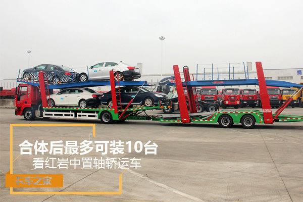
何为汽车列车 国内列车试点进行中
GB1589由2004版的《道路车辆外廓尺寸、轴荷及质量限值》更名为《汽车、挂车及汽车列车外廓尺寸、轴荷及质量限值》，从标准新名称来看，就可以看出新GB1589对于汽车列车进行了明确的规定。
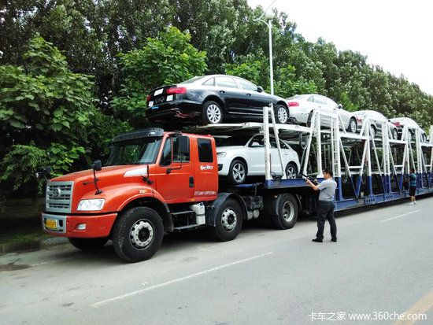
单纯的从定义上来看汽车列车是由汽车或牵引车与一辆或多辆挂车组合的车型，从分类上来说汽车列车分为全挂汽车列车、半挂汽车列车、双挂汽车列车、长货汽车列车；但是考虑到我国的政策限值，GB1589所说的列车并非欧美国家那些多挂的汽车列车。
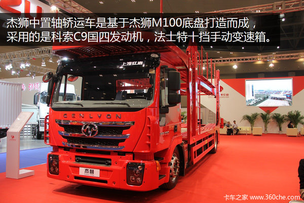
按照《中华人民共和国道路交通安全法实施条例》第五十六条规定，载货汽车、半挂牵引车、拖拉机只允许牵引1辆挂车。因此在标准中只允许牵引一辆挂车。
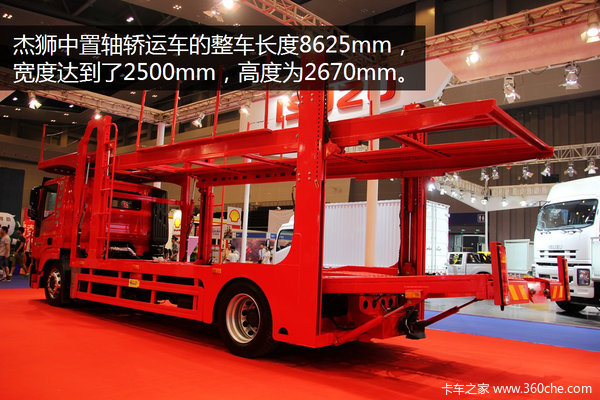
模块化汽车列车试点工作在国内也在进行中，去年黑龙江就首次开展了汽车列车和中置轴货车列车的试点；在前不久的GB1589实施指南会议上，交通运输部运输服务司货运与物流管理处处长战榆林透露在接下来中置轴货车列车的试点工作会在更多的省份进行。
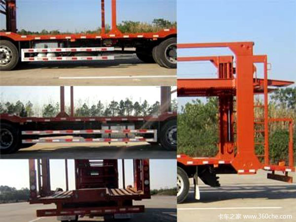
试点工作的进行说明了国家对于汽车列车和中置轴货车列车的重视，不过就目前我国的基本国情以及道路情况分析，想要出现欧美国家的公路列车并不现实；所以GB1589标准对于列车的规定只允许牵引1辆挂车，中置轴车辆运输列车以及铰接列车的长度规定成为GB1589的重点变化之一。
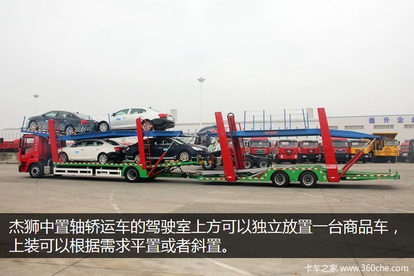
何为货车列车 长度限值20米
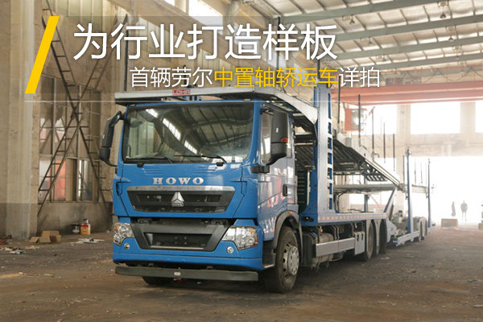
在2004版的GB1589中并没有对列车相关术语的定义，在新标准的第三章节新增加了对于货车列车、长头铰接列车、中置轴车辆运输列车以及乘用车列车的相关概念。
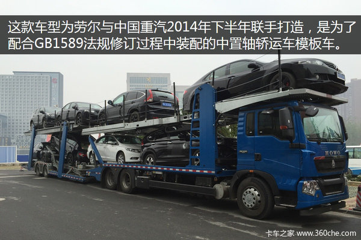
其中货车列车指的是货车和牵引杆挂车或中置轴挂车的组合，也就是说货车列车包括牵引杆挂车列车和中置轴挂车列车，在外廓尺寸限值中，规定货车列车的长度限值为20米（长度限值不包括中置轴车辆运输列车），车宽为2.55米（冷藏车2.6米），高度限值4米。
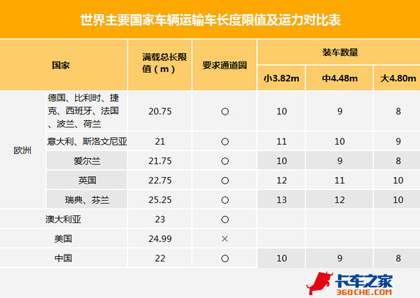
中置轴挂车的定义为牵引装置不能垂直移动（相对于挂车），车轴位于紧靠挂车的重心（当均匀载荷时）的挂车，这种车辆只有较小的垂直静载荷作用于牵引车，不超过相当于挂车最大质量的10%或10000N的载荷（两者取较小者）。其中一轴或多轴可由牵引车来驱动。
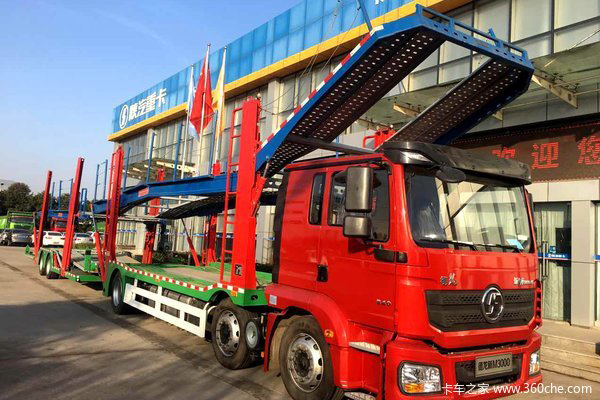
参考欧洲对于挂车长度12米，中置轴列车18.75米，欧洲的箱体的货运单元为7.82的标准，在GB1589规定牵引杆挂车、中置轴挂车的长度限值为12米，为防止箱体过长现象的出现，将车厢长度限值定为8米（中置轴车辆挂车除外），此外由于20米的列车限值规定已久，所以中置轴挂车列车限值和全挂车限值保持一致，依旧采用20米的限值。
22米长度限值 中置轴车辆运输列车
目前轿运车市场上存在着“大怪”“二怪”等超宽超长的违规车型，轿运车市场的治理工作已经迫在眉睫，在刚刚结束的GB1589通报会议中，工信部专家也提到了下半年将逐渐取缔双排轿运车，先改成单排；当然在车辆的过渡时期，除了合法的单排轿运车存在外，市场上也需要新车型来填补一部分空白，这就是GB1589中推出中置轴车辆运输列车的重要因素之一。
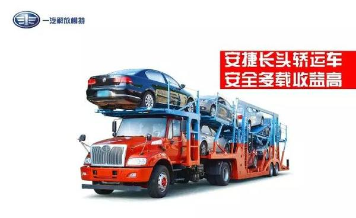
中置轴车辆运输列车作为货车列车中一种特殊形式，长度限值并没有采用上面提到的20米的标准，而是规定限值为22米，宽度方面是2.55米，高度4米。
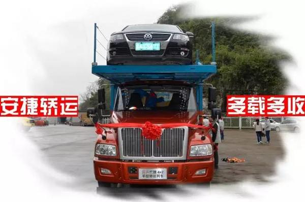
22米的长度限值并未空虚来风，此长度的确定也经历了多项试验，根据我国的实际情况，先后对国内3家中置轴生产企业的9款中置轴车辆运输车样车，进行了多场实地测试，最终才确定了中置轴车辆运输列车长度22米的限值。
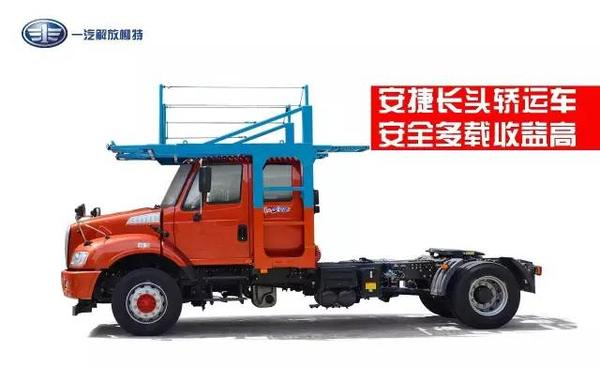
由于国内外道路情况以及政策方面的差异，在车辆尺寸方面也有所差距，但是中置轴车辆运输列车作为国内轿运市场的新车型，也需要参照国外在这方面成功的经验，从上面的表格中能够看出，中置轴车辆运输列车长度22米限值与欧美国家的标准也比较接近。